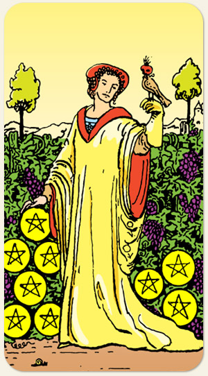

A autossuficiência, o refinamento e o prazer da conquista material. O estágio em que o esforço pessoal se transforma em independência e conforto, indicando que a pessoa aprendeu a dominar o ambiente e a desfrutar dos frutos do próprio trabalho. É a carta da elegância, da segurança financeira e da disciplina interior, marcando uma fase de colheita solitária, porém extremamente gratificante e luxuosa.
Experiências sensoriais, riqueza, ter todos os recursos.
Positivo: Lucro, fartura, bonança, tudo do bom e do melhor, bens de ótima qualidade, trabalhar por querer e por gostar do que faz, valores espirituais elevados.
Negativo: Recursos sem maturidade para administrar, riquezas sendo desperdiçadas, sofrer por fartura, procurar sarna para se coçar, não ver brilho nas coisas, estar insatisfeito mesmo tendo recebido grandes bençãos.
Símbolos: Jardim, Pássaro, Videira, Castelo, [Túnica Amarela].
Cores: Amarelo, Vermelho, Verde.